30. The Internal Geometry of Crystals
30–1 The internal geometry of crystals#
We have finished the study of the basic laws of electricity and magnetism, and we are now going to study the electromagnetic properties of matter. We begin by describing solids—that is, crystals. When the atoms of matter are not moving around very much, they get stuck together and arrange themselves in a configuration with as low an energy as possible. If the atoms in a certain place have found a pattern which seems to be of low energy, then the atoms somewhere else will probably make the same arrangement. For these reasons, we have in a solid material a repetitive pattern of atoms.
In other words, the conditions in a crystal are this way: The environment of a particular atom in a crystal has a certain arrangement, and if you look at the same kind of an atom at another place farther along, you will find one whose surroundings are exactly the same. If you pick an atom farther along by the same distance, you will find the conditions exactly the same once more. The pattern is repeated over and over again—and, of course, in three dimensions.
Imagine the problem of designing a wallpaper—or a cloth, or some geometric design for a plane area—in which you are supposed to have a design element which repeats and repeats and repeats, so that you can make the area as large as you want. This is the two-dimensional analog of a problem which a crystal solves in three dimensions. For example, Fig. 30–1 (a) shows a common kind of wallpaper design. There is a single element repeated in a pattern that can go on forever. The geometric characteristics of this wallpaper design, considering only its repetition properties and not worrying about the geometry of the flower itself or its artistic merit, are contained in Fig. 30–1 (b). If you start at any point, you can find the corresponding point by moving the distance a along the direction of arrow 1. You can also get to a corresponding point if you move the distance b in the direction of the other arrow. There are, of course, many other directions. You can go, for example, from point \alpha to point \beta and reach a corresponding position, but such a step can be considered as a combination of a step along direction 1, followed by a step along direction 2. One of the basic properties of the pattern can be described by the two shortest steps to nearby equal positions. By “equal” positions we mean that if you were to stand in any one of them and look around you, you would see exactly the same thing as if you were to stand in another one. That’s the fundamental property of a crystal. The only difference is that a crystal is a three-dimensional arrangement instead of a two-dimensional arrangement; and naturally, instead of flowers, each element of the lattice is some kind of an arrangement of atoms—perhaps six hydrogen atoms and two carbon atoms—in some kind of pattern. The pattern of atoms in a crystal can be found out experimentally by x-ray diffraction. We have mentioned this method briefly before, and won’t say any more now except that the precise arrangement of the atoms in space has been worked out for most simple crystals and also for some fairly complex ones.
The internal pattern of a crystal shows up in several ways. First, the binding strength of the atoms in certain directions is usually stronger than in other directions. This means that there are certain planes through the crystal where it is more easily broken than others. They are called the cleavage planes. If you crack a crystal with a knife blade it will often split apart along such a plane. Second, the internal structure often appears at the surface because of the way the crystal was formed. Imagine a crystal being deposited out of a solution. There are the atoms floating around in the solution and finally settling down when they find a position of lowest energy. (It’s as if the wallpaper got made by flowers drifting around until one drifted accidentally into place and got stuck, and then the next, and the next so that the pattern gradually grows.) You can appreciate that there will be certain directions in which it will grow at a different speed than in other directions, thereby growing into some kind of geometrical shape. Because of such effects, the outside surfaces of many crystals show some of the character of the internal arrangement of the atoms.
For example, Fig. 30–2 (a) shows the shape of a typical quartz crystal whose internal pattern is hexagonal. If you look closely at such a crystal, you will notice that the outside does not make a very good hexagon because the sides are not all of equal length—they are, in fact, often very unequal. But in one respect it is a very good hexagon: the angles between the faces are exactly 120^\circ. Clearly, the size of any particular face is an accident of the growth, but the angles are a representation of the internal geometry. So every crystal of quartz has a different shape, even though the angles between corresponding faces are always the same.

The internal geometry of a crystal of sodium chloride is also evident from its external shape. Figure 30–2 (b) shows the shape of a typical grain of salt. Again the crystal is not a perfect cube, but the faces are exactly at right angles to one another.
A more complicated crystal is mica, which has the shape shown in Fig. 30–2 (c). It is a highly anisotropic crystal, as is easily seen from the fact that it is very tough if you try to pull it apart in one direction (horizontally in the figure), but very easy to split by pulling apart in the other direction (vertically). It has commonly been used to obtain very tough, thin sheets. Mica and quartz are two examples of natural minerals containing silica. A third example of a mineral with silica is asbestos, which has the interesting property that it is easily pulled apart in two directions but not in the third. It appears to be made of very strong, linear fibers.
30–2 Chemical bonds in crystals#
The mechanical properties of crystals clearly depend on the kind of chemical bindings between the atoms. The strikingly different strength of mica along different directions depends on the kinds of interatomic binding in the different directions. You have already learned in chemistry, no doubt, about the different kinds of chemical bonds. First, there are ionic bonds, as we have already discussed for sodium chloride. Roughly speaking, the sodium atoms have lost an electron and become positive ions; the chlorine atoms have gained an electron and become negative ions. The positive and negative ions are arranged in a three-dimensional checkerboard and are held together by electrical forces.
The covalent bond—in which electrons are shared between two atoms—is more common and is usually very strong. In a diamond, for example, the carbon atoms have covalent bonds in all four directions to the nearest neighbors, so the crystal is very hard indeed. There is also covalent bonding between silicon and oxygen in a quartz crystal, but there the bond is really only partially covalent. Because there is not complete sharing of the electrons, the atoms are partly charged, and the crystal is somewhat ionic. Nature is not as simple as we try to make it; there are really all possible gradations between covalent and ionic bonding.
A sugar crystal has still another kind of binding. In it there are large molecules in which the atoms are held strongly together by covalent bonds, so that the molecule is a tough structure. But since the strong bonds are completely satisfied, there are only relatively weak attractions between the separate, individual molecules. In such molecular crystals the molecules keep their individual identity, so to speak, and the internal arrangement might be as shown in Fig. 30–3. Since the molecules are not held strongly to each other, the crystals are easy to break. They are quite different from something like diamond, which is really one giant molecule that cannot be broken anywhere without disrupting strong covalent bonds. Paraffin is another example of a molecular crystal.

An extreme example of a molecular crystal occurs in a substance like solid argon. There is very little attraction between the atoms—each atom is a completely saturated monatomic molecule. But at very low temperatures, the thermal motion is very small, so the slight interatomic forces can cause the atoms to settle down into a regular array like a pile of closely packed spheres.
The metals form a completely different class of substances. The bonding is of an entirely different kind. In a metal the bonding is not between adjacent atoms but is a property of the whole crystal. The valence electrons are not attached to one atom or to a pair of atoms but are shared throughout the crystal. Each atom contributes an electron to a universal pool of electrons, and the atomic positive ions reside in the sea of negative electrons. The electron sea holds the ions together like some kind of glue.
In the metals, since there are no special bonds in any particular direction, there is no strong directionality in the binding. They are still crystalline, however, because the total energy is lowest when the atomic ions are arranged in some definite array—although the energy of the preferred arrangement is not usually much lower than other possible ones. To a first approximation, the atoms of many metals are like small spheres packed in as tightly as possible.
30–3 The growth of crystals#
Try to imagine the natural formation of crystals in the earth. In the earth’s surface there is a big mixture of all kinds of atoms. They are being continually churned about by volcanic action, by wind, and by water—continually being moved about and mixed. Yet, by some trick, silicon atoms gradually begin to find each other, and to find oxygen atoms, to make silica. One atom at a time is added to the others to build up a crystal—the mixture gets unmixed. And somewhere nearby, sodium and chlorine atoms are finding each other and building up a crystal of salt.
How does it happen that once a crystal is started, it permits only a particular kind of atom to join on? It happens because the whole system is working toward the lowest possible energy. A growing crystal will accept a new atom if it is going to make the energy as low as possible. But how does it know that a silicon—or an oxygen—atom at some particular spot is going to result in the lowest possible energy? It does it by trial and error. In the liquid, all of the atoms are in perpetual motion. Each atom bounces against its neighbors about 10^{13} times every second. If it hits against the right spot of growing crystal, it has a somewhat smaller chance of jumping off again if the energy is low. By continually testing over periods of millions of years at a rate of 10^{13} tests per second, the atoms gradually build up at the places where they find their lowest energy. Eventually they grow into big crystals.
30–4 Crystal lattices#
The arrangement of the atoms in a crystal—the crystal lattice —can take on many geometric forms. We would like to describe first the simplest lattices, which are characteristic of most of the metals and of the solid form of the inert gases. They are the cubic lattices which can occur in two forms: the body-centered cubic, shown in Fig. 30–4 (a), and the face-centered cubic shown in Fig. 30–4 (b). The drawings show, of course, only one cube of the lattice; you are to imagine that the pattern is repeated indefinitely in three dimensions. Also, to make the drawing clearer, only the “centers” of the atoms are shown. In an actual crystal, the atoms are more like spheres in contact with each other. The dark and light spheres in the drawings may, in general, stand for different kinds of atoms or may be the same kind. For instance, iron has a body-centered cubic lattice at low temperatures, but a face-centered cubic lattice at higher temperatures. The physical properties are quite different in the two crystalline forms.

How do such forms come about? Imagine that you have the problem of packing spherical atoms together as tightly as possible. One way would be to start by making a layer in a “hexagonal close-packed array,” as shown in Fig. 30–5 (a). Then you could build up a second layer like the first, but displaced horizontally, as shown in Fig. 30–5 (b). Next, you can put on the third layer. But notice! There are two distinct ways of placing the third layer. If you start the third layer by placing an atom at A in Fig. 30–5 (b), each atom in the third layer is directly above an atom of the bottom layer. On the other hand, if you start the third layer by putting an atom at the position B, the atoms of the third layer will be centered at points exactly in the middle of a triangle formed by three atoms of the bottom layer. Any other starting place is equivalent to A or B, so there are only two ways of placing the third layer.

If the third layer has an atom at point B, the crystal lattice is a face-centered cubic—but seen at an angle. It seems funny that starting with hexagons you can end up with cubes. But notice that a cube looked at from a corner has a hexagonal outline. For instance, Fig. 30–6 could represent a plane hexagon or a cube seen in perspective!

If a third layer is added to Fig. 30–5 (b) by starting with an atom at A, there is no cubical structure, and the lattice has instead only a hexagonal symmetry. It is clear that both possibilities we have described are equally close-packed.
Some metals—for example, copper and silver—choose the first alternative, the face-centered cubic. Others—for example, beryllium and magnesium—choose the other alternatives; they form hexagonal crystals. Clearly, which crystal lattice appears cannot depend only on the packing of little spheres, but must also be determined in part by other factors. In particular, it depends on the slight remaining angular dependence of the interatomic forces (or, in the case of the metals, on the energy of the electron pool). You will, no doubt, learn all about such things in your chemistry courses.
30–5 Symmetries in two dimensions#
We would now like to discuss some of the properties of crystals from the point of view of their internal symmetries. The main feature of a crystal is that if you start at one atom and move to a corresponding atom one lattice unit away, you are again in the same kind of an environment. That’s the fundamental proposition. But if you were an atom, there would be another kind of change that could take you again to the same environment—that is, another possible “symmetry.” Figure 30–7 (a) shows another possible “wallpaper-type” design (though one you have probably never seen). Suppose we compare the environments for points A and B. You might, at first, think that they are the same—but not quite. Points C and D are equivalent to A, but the environment of B is like that of A only if the surroundings are reversed, as in a mirror reflection.

There are other kinds of “equivalent” points in the pattern. For instance, the points E and F have the “same” environments except that one is rotated 90^\circ with respect to the other. The pattern is quite special. A rotation of 90^\circ —or any multiple of it—about a vertex such as A gives the same pattern all over again. A crystal with such a structure would have square corners on the outside, but inside it is more complicated than a simple cube.
Now that we have described some special examples, let’s try to figure out all the possible symmetries a crystal can have. First, we consider what happens in a plane. A plane lattice can be defined by the two so-called primitive vectors that go from one point of the lattice to the two nearest equivalent points. The two vectors \FLPone and \FLPtwo are the primitive vectors of the lattice of Fig. 30–1. The two vectors \mathbf{a} and \mathbf{b} of Fig. 30–7 (a) are the primitive vectors of the pattern there. We could, of course, equally well replace \mathbf{a} by -\mathbf{a}, or \mathbf{b} by -\mathbf{b}. Since \mathbf{a} and \mathbf{b} are equal in magnitude and at right angles, a rotation of 90^\circ turns \mathbf{a} into \mathbf{b}, and \mathbf{b} into -\mathbf{a}, giving the same lattice once again.
We see that there are lattices which have a “four-sided” symmetry. And we have described earlier a close-packed array based on a hexagon which could have a six-sided symmetry. A rotation of the array of circles in Fig. 30–5 (a) by an angle of 60^\circ about the center of any circle brings the pattern back to itself.
What other kinds of rotational symmetry are there? Can we have, for example, a fivefold or an eightfold rotational symmetry? It is easy to see that they are impossible. The only symmetry with more sides than four is a six-sided symmetry. First, let’s show that more than sixfold symmetry is impossible. Suppose we try to imagine a lattice with two equal primitive vectors with an enclosed angle less than 60^\circ, as in Fig. 30–8 (a). We are to suppose that points B and C are equivalent to A, and that \mathbf{a} and \mathbf{b} are the two shortest vectors from A to its equivalent neighbors. But that is clearly wrong, because the distance between B and C is shorter than from either one to A. There must be a neighbor at D equivalent to A which is closer than B or C. We should have chosen \mathbf{b}' as one of our primitive vectors. So the angle between the two primitive vectors must be 60^\circ or larger. Octagonal symmetry is not possible.
What about fivefold symmetry? If we assume that the primitive vectors \mathbf{a} and \mathbf{b} have equal lengths and make an angle of 2\pi/5=72^\circ, as in Fig. 30–8 (b), then there should also be an equivalent lattice point at D, at 72^\circ from C. But the vector \mathbf{b}' from E to D is then less than \mathbf{b}, so \mathbf{b} is not a primitive vector. There can be no fivefold symmetry. The only possibilities that do not get us into this kind of difficulty are \theta=60^\circ, 90^\circ, or 120^\circ. Zero or 180^\circ are also clearly possible. One way of stating our result is that the pattern can be left unchanged by a rotation of one full turn (no change at all), one-half of a turn, one-third, one-fourth, or one-sixth of a turn. And those are all the possible rotational symmetries in a plane—a total of five. If \theta=2\pi/n, we speak of an “ n -fold” symmetry. We say that a pattern with n equal to 4 or to 6 has a “higher symmetry” than one with n equal to 1 or to 2.
Returning to Fig. 30–7 (a), we see that the pattern has a fourfold rotational symmetry. We have drawn in Fig. 30–7 (b) another design which has the same symmetry properties as part (a). The little comma-like figures are asymmetric objects which serve to define the symmetry of the design inside of each square. Notice that the commas are reversed in alternate squares, so that the unit cell is larger than one of the small squares. If there were no commas, the pattern would still have fourfold symmetry, but the unit cell would be smaller. The patterns of Fig. 30–7 also have other symmetry properties. For instance, a reflection about any of the broken lines R – R reproduces the same pattern.
The patterns of Fig. 30–7 have still another kind of symmetry. If the pattern is reflected about the line Y – Y and shifted one square to the right (or left), we get back the original pattern. The line Y – Y is called a “glide” line.
These are all the possible symmetries in two dimensions. There is one more spatial symmetry operation which is equivalent in two dimensions to a 180^\circ rotation, but which is a quite distinct operation in three dimensions. It is inversion. By an inversion we mean that any point at the vector displacement \mathbf{R} from some origin [for instance, the point A in Fig. 30–9 (b)] is moved to the point at -\mathbf{R}.
An inversion of pattern (a) of Fig. 30–9 produces a new pattern, but an inversion of pattern (b) reproduces the same pattern. For a two-dimensional pattern (as you can see from the figure), an inversion of the pattern (b) through the point A is equivalent to a rotation of 180^\circ about the same point. Suppose, however, we make the pattern in Fig. 30–9 (b) three dimensional by imagining that the little 6 ’s and 9 ’s each have an “arrow” pointing out of the page. After an inversion in three dimensions all the arrows will be reversed, so the pattern is not reproduced. If we indicate the heads and tails of the arrows by dots and crosses, respectively, we can make a three-dimensional pattern, as in Fig. 30–9 (c), which is not symmetric under an inversion, or we can make a pattern like the one shown in (d), which does have such a symmetry. Notice that it is not possible to imitate a three-dimensional inversion by any combination of rotations.
If we characterize the “symmetry” of a pattern—or lattice—by the kinds of symmetry operations we have been describing, it turns out that for two dimensions 17 distinct patterns are possible. We have drawn one pattern of the lowest possible symmetry in Fig. 30–1, and one of high symmetry in Fig. 30–7. We will leave you with the game of trying to figure out all of the 17 possible patterns.
It is peculiar how few of the 17 possible patterns are used in making wallpaper and fabrics. One always sees the same three or four basic patterns. Is this because of a lack of imagination of designers, or because many of the possible patterns are not pleasing to the eye?
30–6 Symmetries in three dimensions#
So far we have talked only about patterns in two dimensions. What we are really interested in, however, are patterns of atoms in three dimensions. First, it is clear that a three-dimensional crystal will have three primitive vectors. If we then ask about the possible symmetry operations in three dimensions, we find that there are 230 different possible symmetries! For some purposes, these 230 types can be grouped into seven classes, which are drawn in Fig. 30–10. The lattice with the least symmetry is called the triclinic. Its unit cell is a parallelepiped. The primitive vectors are of different lengths, and no two of the angles between them are equal. There is no possibility of any rotational or reflection symmetry. There are, however, still two possible symmetries—the unit cell is, or is not, changed by an inversion through the vertex. (By an inversion in three dimensions, we again mean that spatial displacements \mathbf{R} are replaced by -\mathbf{R} —in other words, that (x,y,z) goes into (-x,-y,-z)). So the triclinic lattice has only two possible symmetries, unless there is some special relation among the primitive vectors. For example, if all the vectors are equal and are separated by equal angles, one has the trigonal lattice shown in the figure. This figure can have an additional symmetry; it may be unchanged by a rotation about the long, body diagonal.
If one of the primitive vectors, say \mathbf{c}, is at right angles to the other two, we get a monoclinic unit cell. A new symmetry is possible—a rotation by 180^\circ about \mathbf{c}. The hexagonal cell is a special case in which the vectors \mathbf{a} and \mathbf{b} are equal and the angle between them is 60^\circ, so that a rotation of 60^\circ, or 120^\circ, or 180^\circ about the vector \mathbf{c} repeats the same lattice (for certain internal symmetries).
If all three primitive vectors are at right angles, but of different lengths, we get the orthorhombic cell. The figure is symmetric for rotations of 180^\circ about the three axes. Higher-order symmetries are possible with the tetragonal cell, which has all right angles and two equal primitive vectors. Finally, there is the cubic cell, which is the most symmetric of all.
The point of all this discussion about symmetries is that the internal symmetries of the crystals show up—sometimes in subtle ways—in the macroscopic physical properties of the crystal. For instance, a crystal will, in general, have a tensor electric polarizability. If we describe the tensor in terms of the ellipsoid of polarization, we should expect that some of the crystal symmetries should show up also in the ellipsoid. For example, a cubic crystal is symmetric with respect to a rotation of 90^\circ about any one of three orthogonal directions. Clearly, the only ellipsoid with this property is a sphere. A cubic crystal must be an isotropic dielectric.
On the other hand, a tetragonal crystal has a fourfold rotational symmetry. Its ellipsoid must have two of its principal axes equal, and the third must be parallel to the axis of the crystal. Similarly, since the orthorhombic crystal has twofold rotational symmetry about three orthogonal axes, its axes must coincide with the axes of the polarization ellipsoid. In a like manner, one of the axes of a monoclinic crystal must be parallel to one of the principal axes of the ellipsoid, though we can’t say anything about the other axes. Since a triclinic crystal has no rotational symmetry, the ellipsoid can have any orientation at all.
As you can see, we can make a big game of figuring out the possible symmetries and relating them to the possible physical tensors. We have considered only the polarization tensor, but things get more complicated for others—for instance, for the tensor of elasticity. There is a branch of mathematics called “group theory” that deals with such subjects, but usually you can figure out what you want with common sense.
30–7 The strength of metals#
We have said that metals usually have a simple cubic crystal structure; we want now to discuss their mechanical properties—which depend on this structure. Metals are, generally speaking, very “soft,” because it is easy to slide one layer of the crystal over the next. You may think: “That’s ridiculous; metals are strong.” Not so, a single crystal of a metal can be distorted very easily.

Suppose we look at two layers of a crystal subjected to a shear force, as shown in the diagram of Fig. 30–11 (a). You might at first think the whole layer would resist motion until the force was big enough to push the whole layer “over the hump,” so that it shifted one notch to the left. Although slipping does occur along a plane, it doesn’t happen that way. (If it did, you would calculate that the metal is much stronger than it really is.) What happens is more like one atom going at a time; first the atom on the left makes its jump, then the next, and so on, as indicated in Fig. 30–11 (b). In effect it is the vacant space between two atoms that quickly travels to the right, with the net result that the whole second layer has moved over one atomic spacing. The slipping goes this way because it takes much less energy to lift one atom at a time over the hump than to lift a whole row. Once the force is enough to start the process, it goes the rest of the way very fast.
It turns out that in a real crystal, slipping will occur repeatedly at one plane, then will stop there and start at some other plane. The details of why it starts and stops are quite mysterious. It is, in fact, quite strange that successive regions of slip are often fairly evenly spaced. Figure 30–12 shows a photograph of a tiny thin copper crystal that has been stretched. You can see the various planes where slipping has occurred.
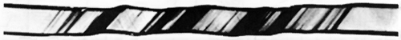
The sudden slipping of individual crystal planes is quite apparent if you take a piece of tin wire that has large crystals in it and stretch it while holding it next to your ear. You can hear a rush of “ticks” as the planes snap to their new positions, one after the other.
The problem of having a “missing” atom in one row is somewhat more difficult than it might appear from Fig. 30–11. When there are more layers, the situation must be something like that shown in Fig. 30–13. Such an imperfection in a crystal is called a dislocation. It is presumed that such dislocations are either present when the crystal was formed or are generated at some notch or crack at the surface. Once they are produced, they can move relatively freely through the crystal. The gross distortions result from the motions of many of such dislocations.

Dislocations can move freely—that is, they require little extra energy—so long as the rest of the crystal has a perfect lattice. But they may get “stuck” if they encounter some other kind of imperfection in the crystal. If it takes a lot of energy for them to pass the imperfection, they will be stopped. This is precisely the mechanism that gives strength to imperfect metal crystals. Pure iron crystals are quite soft, but a small concentration of impurity atoms may cause enough imperfections to effectively immobilize the dislocations. As you know, steel, which is primarily iron, is very hard. To make steel, a small amount of carbon is dissolved in the iron melt; if the melt is cooled rapidly, the carbon precipitates out in little grains, making many microscopic distortions in the lattice. The dislocations can no longer move about, and the metal is hard.
Pure copper is very soft, but can be “work-hardened.” This is done by hammering on it or bending it back and forth. In this case, many new dislocations of various kinds are made which interfere with one another, cutting down their mobility. Perhaps you’ve seen the trick of taking a bar of “dead soft” copper and gently bending it around someone’s wrist as a bracelet. In the process, it becomes work-hardened and cannot easily be unbent again! A work-hardened metal like copper can be made soft again by annealing at a high temperature. The thermal motion of the atoms “irons out” the dislocations and makes large single crystals again. We have, so far, described only the so-called slip dislocation. There are many other kinds, one of which is the screw dislocation shown in Fig. 30–14. Such dislocations often play an important part in crystal growth.
![Fig. 30–14. A screw dislocation. [From Charles Kittel, Introduction to Solid State Physics, John Wiley and Sons, Inc., New York, 2nd ed., 1956.]](../images/Ch30-F14.svg)
30–8 Dislocations and crystal growth#
One of the great puzzles for a long time was how crystals can possibly grow. We have described how it is that each atom might, by repeated testing, determine whether it was better to be in the crystal or not. But that means that each atom must find a place of low energy. However, an atom put on a new surface is only bound by one or two bonds from below, and doesn’t have the same energy it would have if it were placed in a corner, where it would have atoms on three sides. Suppose we imagine a growing crystal as a stack of blocks, as shown in Fig. 30–15. If we try a new block at, say, position A, it will have only one of the six neighbors it should ultimately get. With so many bonds lacking, its energy is not very low. It would be better off at position B, where it already has one-half of its quota of bonds. Crystals do indeed grow by attaching new atoms at places like B.

What happens, though, when that line is finished? To start a new line, an atom must come to rest with only two sides attached, and that is again not very likely. Even if it did, what would happen when the layer was finished? How could a new layer get started? One answer is that the crystal prefers to grow at a dislocation, for instance around a screw dislocation like the one shown in Fig. 30–14. As blocks are added to this crystal, there is always some place where there are three available bonds. The crystal prefers, therefore, to grow with a dislocation built in. Such a spiral pattern of growth is shown in Fig. 30–16, which is a photograph of a single crystal of paraffin.
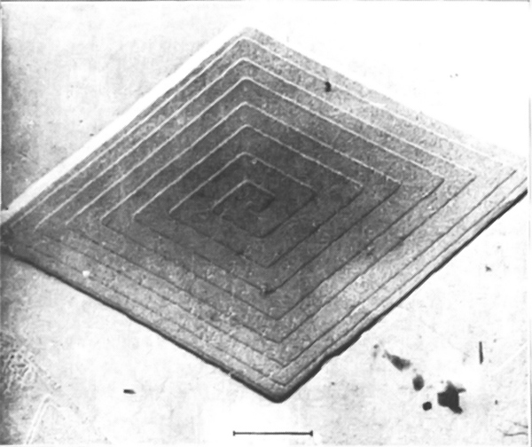
30–9 The Bragg-Nye crystal model#
We cannot, of course, see what goes on with the individual atoms in a crystal. Also, as you realize by now, there are many complicated phenomena that are not easy to treat quantitatively. Sir Lawrence Bragg and J. F. Nye have devised a scheme for making a model of a metallic crystal which shows in a striking way many of the phenomena that are believed to occur in a real metal. In the following pages we have reproduced their original article, which describes their method and shows some of the results they obtained with it. (The article is reprinted from the Proceedings of the Royal Society of London, Vol. 190, September 1947, pp. 474–481—with the permission of the authors and of the Royal Society.) 1
1. The bubble model Models of crystal structure have been described from time to time in which the atoms are represented by small floating or suspended magnets, or by circular disks floating on a water surface and held together by the forces of capillary attraction. These models have certain disadvantages; for instance, in the case of floating objects in contact, frictional forces impede their free relative movement. A more serious disadvantage is that the number of components is limited, for a large number of components is required in order to approach the state of affairs in a real crystal. The present paper describes the behaviour of a model in which the atoms are represented by small bubbles from 2\Rdot0 to 0\Rdot1 mm. in diameter floating on the surface of a soap solution. These small bubbles are sufficiently persistent for experiments lasting an hour or more, they slide past each other without friction, and they can be produced in large numbers. Some of the illustrations in this paper were taken from assemblages of bubbles numbering 100{,}000 or more. The model most nearly represents the behaviour of a metal structure, because the bubbles are of one type only and are held together by a general capillary attraction, which represents the binding force of the free electrons in the metal. A brief description of the model has been given in the Journal of Scientific Instruments (Bragg 1942 b).

2. Method of formation The bubbles are blown from a fine orifice, beneath the surface of a soap solution. We have had the best results with a solution the formula of which was given to us by Mr Green of the Royal Institution. 15\Rdot2 c.c. of oleic acid (pure redistilled) is well shaken in 50 c.c. of distilled water. This is mixed thoroughly with 73 c.c. of 10% solution of tri-ethanolamine and the mixture made up to 200 c.c. To this is added 164 c.c. of pure glycerine. It is left to stand and the clear liquid is drawn off from below. In some experiments this was diluted in three times its volume of water to reduce viscosity. The orifice of the jet is about 5 mm. below the surface. A constant air pressure of 50 to 200 cm. of water is supplied by means of two Winchester flasks. Normally the bubbles are remarkably uniform in size. Occasionally they issue in an irregular manner, but this can be corrected by a change of jet or of pressure. Unwanted bubbles can easily be destroyed by playing a small flame over the surface. Figure 1 shows the apparatus. We have found it of advantage to blacken the bottom of the vessel, because details of structure, such as grain boundaries and dislocations, then show up more clearly.
Figure 2, plate 8, shows a portion of a raft or two-dimensional crystal of bubbles. Its regularity can be judged by looking at the figure in a glancing direction. The size of the bubbles varies with the aperture, but does not appear to vary to any marked degree with the pressure or the depth of the orifice beneath the surface. The main effect of increasing the pressure is to increase the rate of issue of the bubbles. As an example, a thick-walled jet of 49 \mu bore with a pressure of 100 cm. produced bubbles of 1\Rdot2 mm. in diameter. A thin-walled jet of 27 \mu diameter and a pressure of 180 cm. produced bubbles of 0\Rdot6 mm. diameter. It is convenient to refer to bubbles of 2\Rdot0 to 1\Rdot0 mm. diameter as ‘large’ bubbles, those from 0\Rdot8 to 0\Rdot6 mm. diameter as ‘medium’ bubbles, and those from 0\Rdot3 to 0\Rdot1 mm. diameter as ‘small’ bubbles, since their behaviour varies with their size.
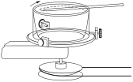
With this apparatus we have not found it possible to reduce the size of the jet and so produce bubbles of smaller diameter than 0\Rdot6 mm. As it was desired to experiment with very small bubbles, we had recourse to placing the soap solution in a rotating vessel and introducing a fine jet as nearly as possible parallel to a stream line. The bubbles are swept away as they form, and under steady conditions are reasonably uniform. They issue at a rate of one thousand or more per second, giving a high-pitched note. The soap solution mounts up in a steep wall around the perimeter of the vessel while it is rotating, but carries back most of the bubbles with it when rotation ceases. With this device, illustrated in figure 3, bubbles down to 0\Rdot12 mm. in diameter can be obtained. As an example, an orifice 38 \mu across in a thin-walled jet, with a pressure of 190 cm. of water, and a speed of the fluid of 180 cm./sec. past the orifice, produced bubbles of 0\Rdot14 mm. diameter. In this case a dish of diameter 9\Rdot5 cm. and speed of 6 rev./sec. was used. Figure 4, plate 8, is an enlarged picture of these ‘small’ bubbles and shows their degree of regularity; the pattern is not as perfect with a rotating as with a stationary vessel, the rows being seen to be slightly irregular when viewed in a glancing direction.
These two-dimensional crystals show structures which have been supposed to exist in metals, and simulate effects which have been observed, such as grain boundaries, dislocations and other types of fault, slip, recrystallization, annealing, and strains due to ‘foreign’ atoms.
3. Grain boundaries Figures 5 a, 5 b and 5 c, plates 9 and 10, show typical grain boundaries for bubbles of 1\Rdot87, 0\Rdot76 and 0\Rdot30 mm. diameter respectively. The width of the disturbed area at the boundary, where the bubbles have an irregular distribution, is in general greater the smaller the bubbles. In figure 5 a, which shows portions of several adjacent grains, bubbles at a boundary between two grains adhere definitely to one crystalline arrangement or the other. In figure 5 c there is a marked ‘Beilby layer’ between the two grains. The small bubbles, as will be seen, have a greater rigidity than the large ones, and this appears to give rise to more irregularity at the interface.
Separate grains show up distinctly when photographs of polycrystalline rafts such as figures 5 a to 5 c, plates 9 and 10, and figures 12 a to 12 e, plates 14 to 16, are viewed obliquely. With suitable lighting, the floating raft of bubbles itself when viewed obliquely resembles a polished and etched metal in a remarkable way.
It often happens that some ‘impurity atoms’, or bubbles which are markedly larger or smaller than the average, are found in a polycrystalline raft, and when this is so a large proportion of them are situated at the grain boundaries. It would be incorrect to say that the irregular bubbles make their way to the boundaries; it is a defect of the model that no diffusion of bubbles through the structure can take place, mutual adjustments of neighbours alone being possible. It appears that the boundaries tend to readjust themselves by the growth of one crystal at the expense of another till they pass through the irregular atoms.
4. Dislocations When a single crystal or polycrystalline raft is compressed, extended, or otherwise deformed it exhibits a behaviour very similar to that which has been pictured for metals subjected to strain. Up to a certain limit the model is within its elastic range. Beyond that point it yields by slip along one of the three equally inclined directions of closely packed rows. Slip takes place by the bubbles in one row moving forward over those in the next row by an amount equal to the distance between neighbours. It is very interesting to watch this process taking place. The movement is not simultaneous along the whole row but begins at one end with the appearance of a ‘dislocation’, where there is locally one more bubble in the rows on one side of the slip line as compared with those on the other. This dislocation then runs along the slip line from one side of the crystal to the other, the final result being a slip by one ‘inter-atomic’ distance. Such a process has been invoked by Orowan, by Polanyi and by Taylor to explain the small forces required to produce plastic gliding in metal structures. The theory put forward by Taylor (1934) to explain the mechanism of plastic deformation of crystals considers the mutual action and equilibrium of such dislocations. The bubbles afford a very striking picture of what has been supposed to take place in the metal. Sometimes the dislocations run along quite slowly, taking a matter of seconds to cross a crystal; stationary dislocations also are to be seen in crystals which are not homogeneously strained. They appear as short black lines, and can be seen in the series of photographs, figures 12 a to 12 e, plates 14 to 16. When a polycrystalline raft is compressed, these dark lines are seen to be dashing about in all directions across the crystals.
Figures 6 a, 6 b and 6 c, plates 10 and 11, show examples of dislocations. In figure 6 a, where the diameter of the bubbles is 1\Rdot9 mm., the dislocation is very local, extending over about six bubbles. In figure 6 b (diameter 0\Rdot76 mm.) it extends over twelve bubbles, and in figure 6 c (diameter 0\Rdot30 mm.) its influence can be traced for a length of about fifty bubbles. The greater rigidity of the small bubbles leads to longer dislocations. The study of any mass of bubbles shows, however, that there is not a standard length of dislocation for each size. The length depends upon the nature of the strain in the crystal. A boundary between two crystals with corresponding axes at approximately 30^\circ (the maximum angle which can occur) may be regarded as a series of dislocations in alternate rows, and in this case the dislocations are very short. As the angle between the neighbouring crystals decreases, the dislocations occur at wider intervals and at the same time become longer, till one finally has single dislocations in a large body of perfect structure as shown in figures 6 a, 6 b and 6 c.
Figure 7, plate 11, shows three parallel dislocations. If we call them positive and negative (following Taylor) they are positive, negative, positive, reading from left to right. The strip between the last two has three bubbles in excess, as can be seen by looking along the rows in a horizontal direction. Figure 8, plate 12, shows a dislocation projecting from a grain boundary, an effect often observed.
Figure 9, plate 12, shows a place where two bubbles take the place of one. This may be regarded as a limiting case of positive and negative dislocations on neighbouring rows, with the compressive sides of the dislocations facing each other. The contrary case would lead to a hole in the structure, one bubble being missing at the point where the dislocations met.
5. Other types of fault Figure 10, plate 12, shows a narrow strip between two crystals of parallel orientation, the strip being crossed by a number of fault lines where the bubbles are not in close packing. It is in such places as these that recrystallization may be expected. The boundaries approach and the strip is absorbed into a wider area of perfect crystal.
Figures 11 a to 11 g, plates 13 and 14 are examples of arrangements which frequently appear in places where there is a local deficiency of bubbles. While a dislocation is seen as a dark stripe in a general view, these structures show up in the shape of the letter V or as triangles. A typical V structure is seen in figure 11 a. When the model is being distorted, a V structure is formed by two dislocations meeting at an inclination of 60^\circ; it is destroyed by the dislocations continuing along their paths. Figure 11 b shows a small triangle, which also embodies a dislocation, for it will be noticed that the rows below the fault have one more bubble than these below. If a mild amount of ‘thermal movement’ is imposed by gentle agitation of one side of the crystal, such faulty places disappear and a perfect structure is formed.
Here and there in the crystals there is a blank space where a bubble is missing, showing as a black dot in a general view. Examples occur in figure 11 g. Such a gap cannot be closed by a local readjustment, since filling the hole causes another to appear. Such holes both appear and disappear when the crystal is ‘cold-worked’. These structures in the model suggest that similar local faults may exist in an actual metal. They may play a part in processes such as diffusion or the order-disorder change by reducing energy barriers in their neighbourhood, and act as nuclei for crystallization in an allotropic change.
6. Recrystallization and annealing Figures 12 a to 12 e, plates 14 to 16, show the same raft of bubbles at successive times. A raft covering the surface of the solution was given a vigorous stirring with a glass rake, and then left to adjust itself. Figure 12 a shows its aspect about 1 sec. after stirring has ceased. The raft is broken into a number of small ‘crystallites’; these are in a high state of non-homogeneous strain as is shown by the numerous dislocations and other faults. The following photograph (figure 12 b) shows the same raft 32 sec. later. The small grains have coalesced to form larger grains, and much of the strain has disappeared in the process. Recrystallization takes place right through the series, the last three photographs of which show the appearance of the raft 2, 14 and 25 min. after the initial stirring. It is not possible to follow the rearrangement for much longer times, because the bubbles shrink after long standing, apparently due to the diffusion of air through their walls, and they also become thin and tend to burst. No agitation was given to the model during this process. An ever slower process of rearrangement goes on, the movement of the bubbles in one part of the raft setting up strains which activate a rearrangement in a neighbouring part, and that in its turn still another.
A number of interesting points are to be seen in this series. Note the three small grains at the points indicated by the co-ordinates AA, BB, CC. A persists, though changed in form, throughout the whole series. B is still present after 14 min., but has disappeared in 25 min., leaving behind it four dislocations marking internal strain in the grain. Grain C shrinks and finally disappears in figure 12 d, leaving a hole and a V which has disappeared in figure 12 e. At the same time the ill-defined boundary in figure 12 d at DD has become a definite one in figure 12 e. Note also the straightening out of the grain boundary in the neighbourhood of EE in figures 12 b to 12 e. Dislocations of various lengths can be seen, marking all stages between a slight warping of the structure and a definite boundary. Holes where bubbles are missing show up as black dots. Some of these holes are formed or filled up by movements of dislocations, but others represent places where a bubble has burst. Many examples of V ’s and some of triangles can be seen. Other interesting points will be apparent from a study of this series of photographs.
Figures 13 a, 13 b and 13 c, plate 17, show a portion of a raft 1 sec., 4 sec. and 4 min. after the stirring process, and is interesting as showing two successive stages in the relaxation towards a more perfect arrangement. The changes show up well when one looks in a glancing direction across the page. The arrangement is very broken in figure 13 a. In figure 13 b the bubbles have grouped themselves in rows, but the curvature of these rows indicates a high degree of internal strain. In figure 13 c this strain has been relieved by the formation of a new boundary at A – A, the rows on either side now being straight. It would appear that the energy of this strained crystal is greater than that of the intercrystalline boundary. We are indebted to Messrs Kodak for the photographs of figure 13, which were taken when the cinematograph film referred to below was produced.
7. Effect of impurity atom Figure 14, plate 18, shows the widespread effect of a bubble which is of the wrong size. If this figure is compared with the perfect rafts shown in figures 2 and 4, plate 8, it will be seen that three bubbles, one larger and two smaller than normal, disturb the regularity of the rows over the whole of the figure. As has been mentioned above, bubbles of the wrong size are generally found in the grain boundaries, where holes of irregular size occur which can accommodate them.
8. Mechanical properties of the two-dimensional model The mechanical properties of a two-dimensional perfect raft have been described in the paper referred to above (Bragg 1942 b). The raft lies between two parallel springs dipping horizontally in the surface of the soap solution. The pitch of the springs is adjusted to fit the spacing of the rows of bubbles, which then adhere firmly to them. One spring can be translated parallel to itself by a micrometer screw, and the other is supported by two thin vertical glass fibres. The shearing stress can be measured by noting the deflexion of the glass fibres. When subjected to a shearing strain, the raft obeys Hooke’s law of elasticity up to the point where the elastic limit is reached. It then slips along some intermediate row by an amount equal to the width of one bubble. The elastic shear and slip can be repeated several times. The elastic limit is approximately reached when one side of the raft has been sheared by an amount equal to a bubble width past the other side. This feature supports the basic assumption made by one of us in the calculation of the elastic limit of a metal (Bragg 1942 a), in which it is supposed that each crystallite in a cold-worked metal only yields when the strain in it has reached such a value that energy is released by the slip.
A calculation has been made by M. M. Nicolson of the forces between the bubbles, and will be published shortly. It shows two interesting points. The curve for the variation of potential energy with distance between centres is very similar to those which have been plotted for atoms. It has a minimum for a distance between centres slightly less than a free bubble diameter, and rises sharply for smaller distances. Further, the rise is extremely sharp for bubbles of 0\Rdot1 mm. diameter but much less so for bubbles of 1 mm. diameter, thus confirming the impression given by the model that the small bubbles behave as if they were much more rigid than the large ones.
9. Three-dimensional assemblages If the bubbles are allowed to accumulate in multiple layers on the surface, they form a mass of three-dimensional ‘crystals’ with one of the arrangements of closest packing. Figure 15, plate 18, shows an oblique view of such a mass; its resemblance to a polished and etched metal surface is noticeable. In figure 16, plate 20, a similar mass is seen viewed normally. Parts of the structure are definitely in cubic closest packing, the outer surface being the (111) face or (100) face. Figure 17 a, plate 19, shows a (111) face. The outlines of the three bubbles on which each upper bubble rests can be clearly seen, and the next layer of these bubbles is faintly visible in a position not beneath the uppermost layer, showing that the packing of the (111) planes has the well-known cubic succession. Figure 17 b, plate 19, shows a (100) face with each bubble resting on four others. The cubic axes are of course inclined at 45^\circ to the close-packed rows of the surface layer. Figure 17 c, plate 19, shows a twin in the cubic structure across the face (111). The uppermost faces are (111) and (100), and they make a small angle with each other, though this is not apparent in the figure; it shows up in an oblique view. Figure 17 d, plate 19, appears to show both the cubic and hexagonal succession of closely packed planes, but it is difficult to verify whether the left-hand side follows the true hexagonal close-packed structure because it is not certain that the assemblage had a depth of more than two layers at this point. Many instances of twins, and of intercrystalline boundaries, can be seen in figure 16, plate 20.
Figure 18, plate 21, shows several dislocations in a three-dimensional structure subjected to a bending strain.
10. Demonstration of the model With the co-operation of Messrs Kodak, a 16 mm. cinematograph film has been made of the movements of the dislocations and grain boundaries when single crystal and polycrystalline rafts are sheared, compressed, or extended. Moreover, if the soap solution is placed in a glass vessel with a flat bottom, the model lends itself to projection on a large scale by transmitted light. Since a certain depth is required for producing the bubbles, and the solution is rather opaque, it is desirable to make the projection through a glass block resting on the bottom of the vessel and just submerged beneath the surface.
In conclusion, we wish to express our thanks to Mr C. E. Harrold, of King’s College, Cambridge, who made for us some of the pipettes which were used to produce the bubbles.
| References |
| Bragg, W. L. 1942 a Nature, 149, 511. |
| Bragg, W. L. 1942 b J. Sci. Instrum., 19, 148. |
| Taylor, G. I. 1934 Proc. Roy. Soc. A, 145, 362. |
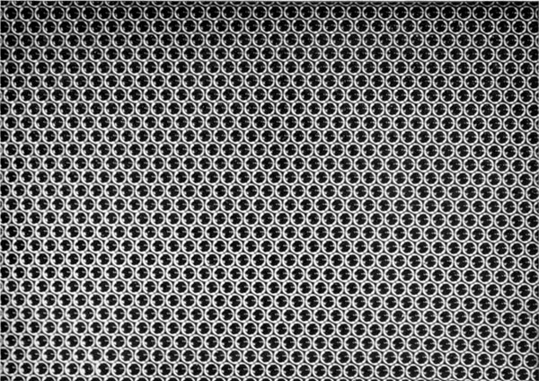


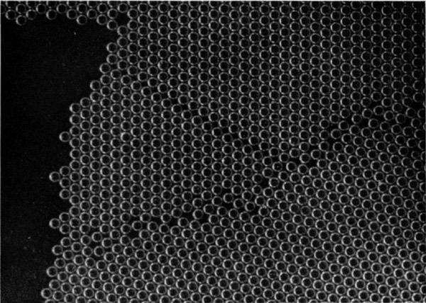

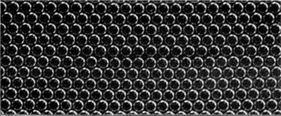

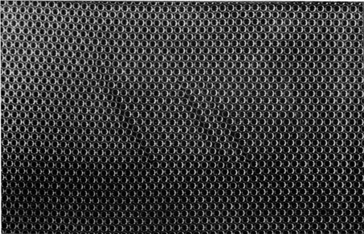
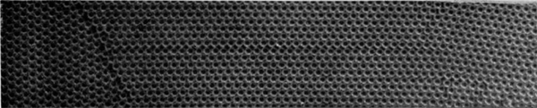
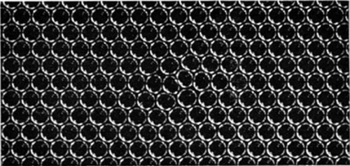


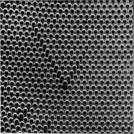
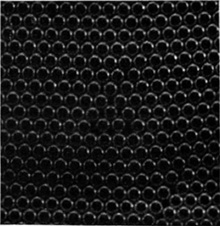

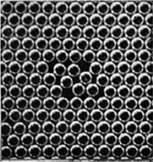


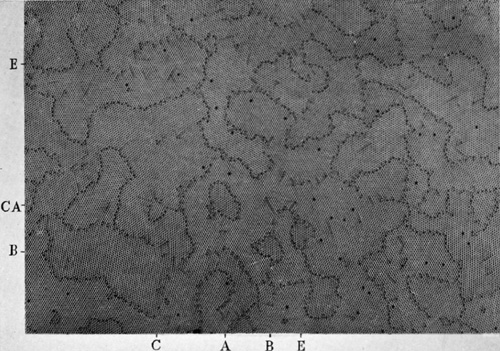
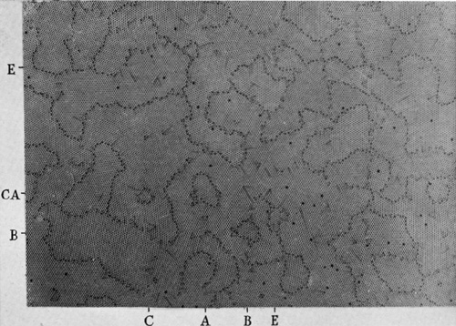
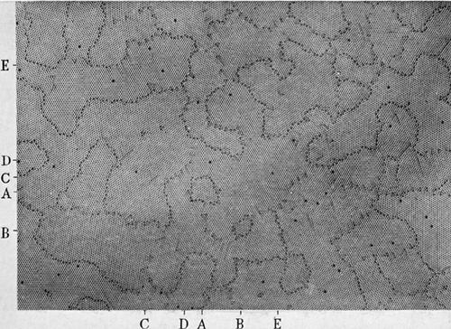

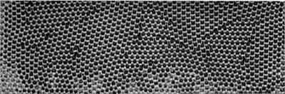


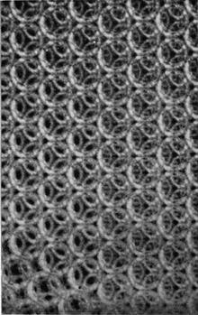